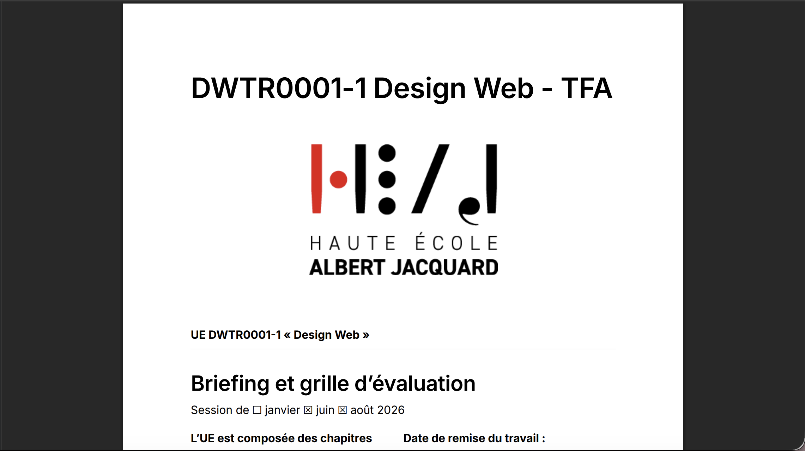
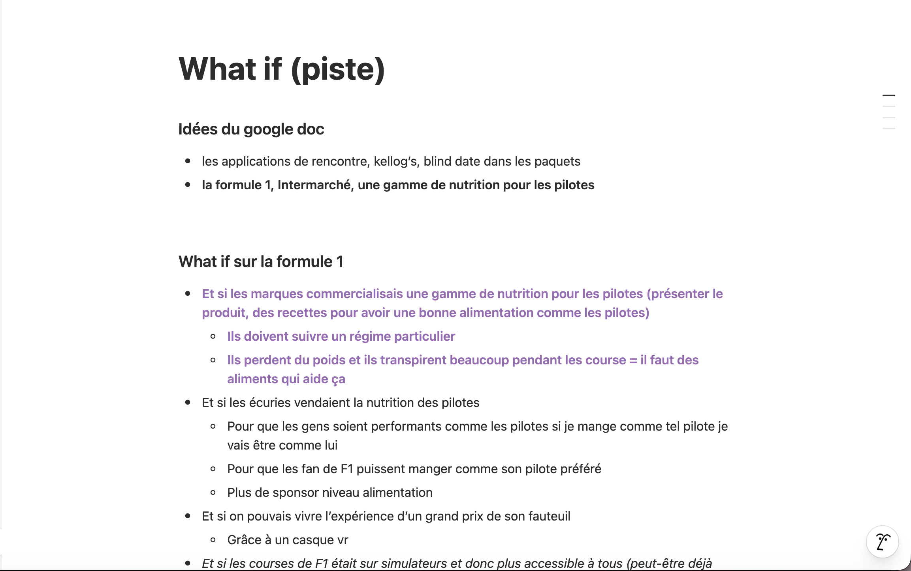
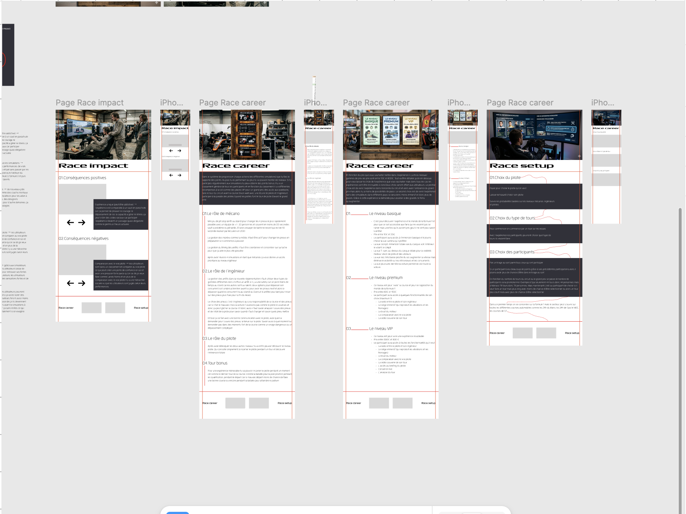
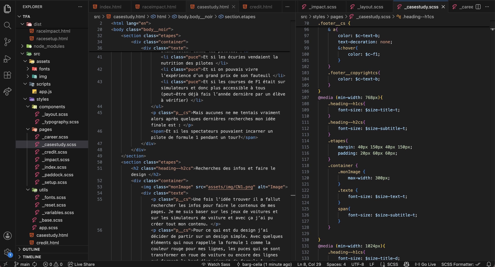

Dans le cadre du cours DWTR (design web), j’ai du réaliser un site web qui explore le thème du Design Fiction. Pour rappel le Design Fiction c’est une méthode de design qui vise à aborder dans un futur proche les conséquences possibles des “nouvelles technologies” dans le vie quotidienne présentées sous la forme d’une mise en situation la plus adaptée à la thématique retenue.
L’objectif de ce travail est de démontrer nos compétences en organisation et en présentation interactive autant visuelle que technique de contenus crées dans un contexte spécifique de Design Fiction. C’est aussi la mis en avant de nos compétence pour nos cherches de stages pour la bac 3

Je voulais la formule 1 comme thème principal du travail car c’est une de mes passion et travailler sur un thème qu’on adore c’est beaucoup plus sympa. Les recherches pour trouver une idée qui me plaisait ont été compliquée car souvent j’avais une idée mais je ne voyais pas comment je pouvais la rendre en mode Design Fiction. Car le thème de Design Fiction est très flou au départ mais après plusieurs explications j’ai su affiner mon champs de recherches pour trouve l’idée qu’il me fallait.
J’ai eu plusieurs idées sur le thème de la formule 1 :
Mais aucunes ne me tentais vraiment alors après quelques dernières recherches mon idée finale est :
Et si les spectateurs pouvaient incarner un pilote de formule 1 pendant un tour?
Une fois l’idée trouver il a fallut rechercher les infos pour faire le contenus de mes pages. Je me suis baser sur les jeux de voitures et sur les simulateurs de voiture et avec ça j’ai pu créer tout mon contenu.
Pour ce qui est du design j’ai décider de partir sur un design simple. Avec quelques éléments qui nous rappelle la formule 1 comme la couleur rouge pour mes lignes, les puces qui se sont transformer en roue de voiture ou encore des lignes qui forment le bord d’un circuit de formule 1.
Pour ma part l’étape du design est toujours ma partie préférée dans les projets, c’est l’endroit ou tu peux t’éclater comme tu veux. Tout en gardant en tête que je voulais faire un design simple et pas trop surcharger d’informations. Parce que j’avais pleins d’idée folle e design mais je voulais pas que ça fasse trop.

Une fois le design finalisé, j’ai pu passer au codage de mes pages. Et pour cette année je me suis mis au défis de coder avec le workflow du cours de Mr Terranova et donc il fallait que je code en scss, au début c’était compliqué parce que j’avais beaucoup de pages différentes mais avec la pratique ça été. Certes il y a surement des améliorations à faire parce qu’on ne fais pas un site parfais en une fois. Mon site est assez simple à coder mais il faut quand même être bien attentif pour réussir à tout bien coder. Malgré que j’ai fais un site simple le code fonctionne très bien et c’est pas un code basique.
Voir le projet